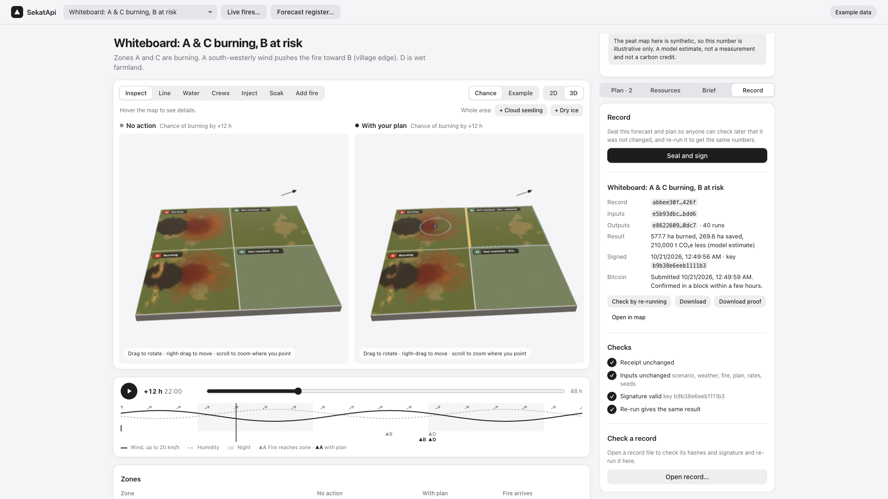

578 ha with your plan · 847 ha if nothing is done · −32%
Peat emissions difference — a model estimate, not a measurement
The peat map here is synthetic — illustrative only
Only resources the commander says exist
Cloud seeding: speculative — kept out of the combined strategy

Same map, draped on real elevation
The same sealed engine compares firefighting plans: control lines, helicopter drops, hand crews, peat injection.It only plans with resources the commander says exist. Options resting on placeholder numbers, like cloud seeding, are tagged speculative and kept out.In the exercise scenario, five hundred seventy-eight hectares burn with the plan against eight hundred forty-seven without: thirty-two percent less.That difference is a model estimate of about two hundred ten thousand tonnes of carbon dioxide equivalent.